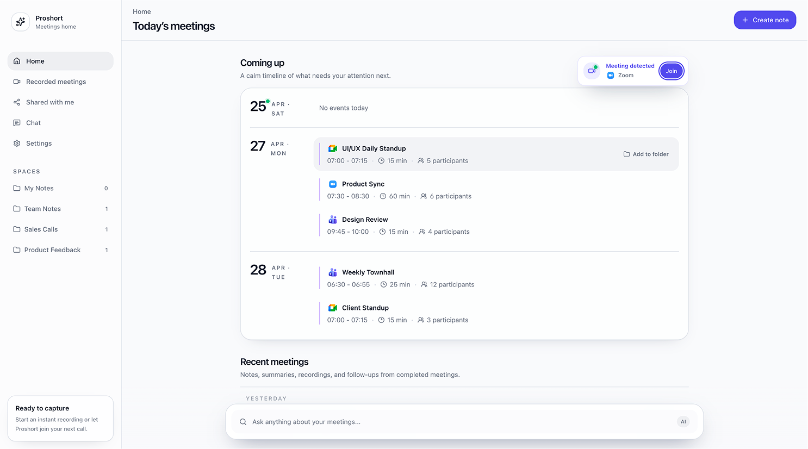
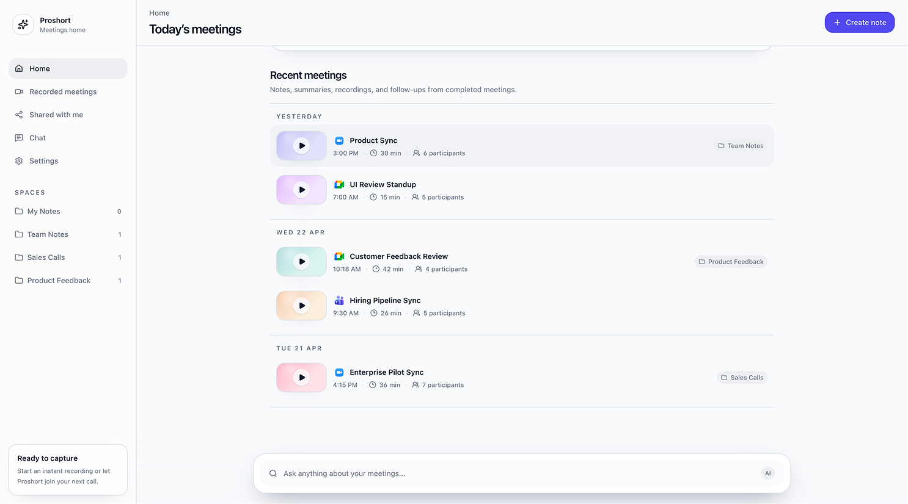
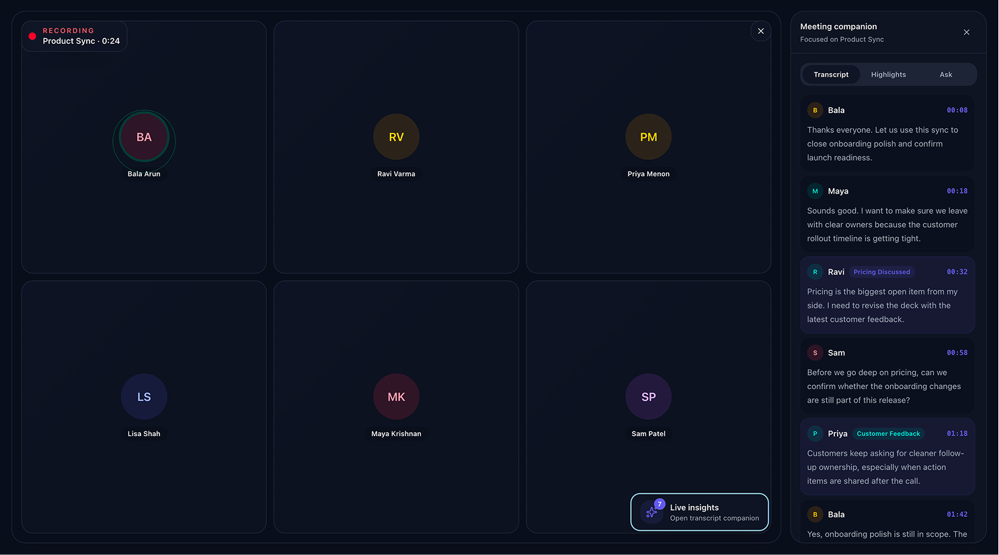
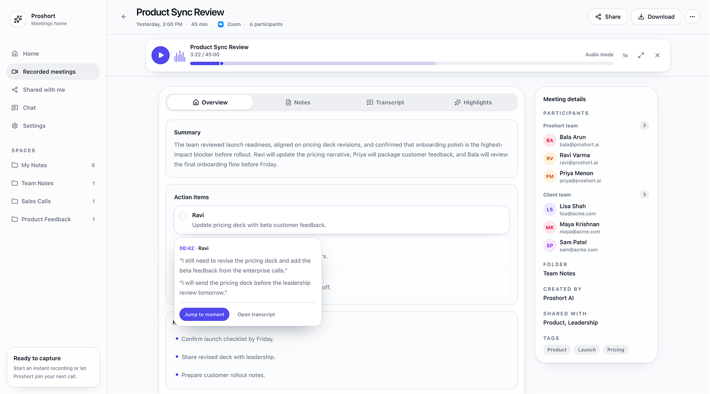
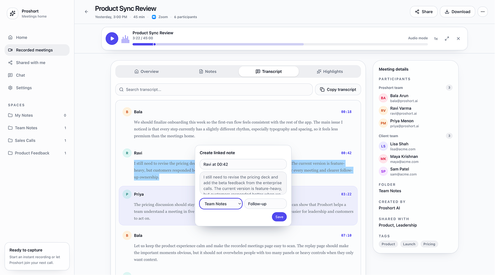
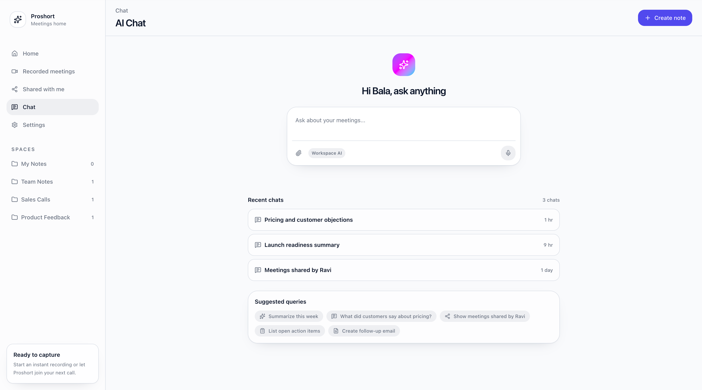

A recorder that
just shows up.
A desktop companion that quietly notices whatever call is happening on your laptop — Zoom, Meet, Teams, a Slack huddle, even a WhatsApp call — and offers to record it. After the call it hands back a summary, action items, and a searchable transcript. The whole thing was prompted into existence in Cursor — a real, clickable prototype built from research, not a Figma mockup.

The post-meeting
tax.
Everyone loves the call. Nobody loves the thirty minutes after it — the recap, the action items you half-remember, the “wait, who owned that?” The notes that do exist are scattered across whatever tool happened to be in the room.
Proshort already had a capable meeting-intelligence product. But it leaned on a meeting bot you had to admit to every single call, and it was wrapped in a CRM-heavy workspace. For a quick internal sync, a customer WhatsApp call, or three back-to-back demos, that is a lot of ceremony to capture a conversation.
So we asked a smaller question, and built the answer instead of speccing it: what if capture were just a quiet thing your laptop already did?
Capture shouldn't be
a guest you keep re-inviting.
Before drawing anything, we wrote down where the heavy, bot-based notetaker workflow loses people. Four moments kept coming up — and each one became a thing the lightweight recorder had to make disappear.
You babysit a bot.
Recording is buried under CRM.
One call at a time.
Platform-locked.
If capture lives on the laptop instead of inside the meeting, the bot, the platform lock and the CRM weight all fall away. The recorder simply hears the room — and asks first.
Three shifts that
made it lightweight.
We didn't redesign the bot. We changed where capture lives. A meeting isn't a thing you join a recorder to — it's audio already happening on a device you own.
Local,
not a guest.
The recorder sits on the laptop and listens to whatever call is in the room. Nothing to admit, nothing intrusive on the other side — and it can hold several calls in a day without dropping any.
Any call,
detected.
Zoom, Meet, Teams, a Slack huddle, a WhatsApp call — when one starts, a small toast offers to record. You stay in control; the recorder just notices.
The work,
after.
When the call ends you get a summary, owned action items, a searchable transcript, and auto-highlights — plus a recorded video when the platform allows it. Then ask anything across all of it.
And the build itself was the point. This whole product was prompted into a working state in Cursor — researched, described, and clicked through in days. The prototype was the spec: every flow decision was something we could open on real data shapes the same afternoon.
Before, during,
and after the call.
The whole product reads as one calm timeline: a home that knows what's next, an unobtrusive recorder while you talk, and a replay surface that turns the conversation into things you can act on. Hover a feature on the zoomable screens and the screenshot focuses on the part it describes.
It knows what's next — and notices when it starts.
You open the app to a quiet schedule, not an inbox. The home pairs an upcoming-meetings timeline with everything you've already recorded, and the moment a call begins anywhere on the laptop, a toast offers to capture it.
A calm timeline,
and a gentle nudge.
Home is a schedule, not a dashboard. The only loud thing on the page is the one moment that needs you — a call that just started.

Meeting detected → Join
When a call begins on the laptop — Zoom, Meet, Teams, a Slack huddle, a WhatsApp call — a small toast surfaces with the platform and a one-tap Join to start capturing. No bot to admit, no link to paste.
“Coming up” timeline
Events group by day with time, length and participant count — a quiet read of what needs attention next, not a wall of cards.
Prepare before you talk
Hover any upcoming meeting to Add to folder or jot a pre-call note, so the context is already attached when the recording lands.
Everything captured,
grouped by day.
Below the schedule, every completed call is one scannable list — notes, summaries, recordings and follow-ups, ready to reopen.

Recordings by platform
Calls on Google Meet, Teams or Zoom carry a recorded video; each row shows its platform icon and a colored play thumbnail so the medium is obvious at a glance.
Folders & spaces
A row's folder tag (Team Notes, Sales Calls, Product Feedback…) mirrors the Spaces in the sidebar — move calls into folders to keep the pile sorted by who cares about it.
Ask is always one field away
A persistent Ask anything about your meetings bar sits at the bottom of every screen — the chat is never more than a glance away.
Recording, without stealing focus.
Once you're capturing, the recorder goes dark and calm — a simple participant view with a small recording marker. A companion panel is there if you want it, and invisible if you don't.
A companion, only when
you reach for it.
The recorder stays out of the way — a participant grid and one honest marker. Open the companion and the call streams in as a live transcript you can read, tag, or question, all on one screen.

It never hides that it's on
A red Recording dot with the meeting name and elapsed time stays in the corner — dismiss the window and capture keeps running, across several calls at once.
A glance tells you the room
A soft ring marks whoever is talking, so the recorder never competes with the actual video call for your attention.
Structured while people talk
The conversation streams in attributed by speaker and timestamp, with key moments tagged in place — Pricing Discussed, Customer Feedback — so the shape of the call forms in real time.
One companion, three tabs
Transcript, Highlights and Ask live in one panel — read the stream, jump between moments, or ask “who owns the pricing deck?” mid-call and get an answer grounded in what was said, with a Reasoning toggle.
Auto highlight tags
Moments that matter get tagged in place as the call happens — Pricing Discussed, Customer Feedback — so the structure of the call is forming in real time, not after it.
Interrogate the call live
Ask “who owns the pricing deck?” while it's still happening and get an answer grounded in what was actually said — with a Reasoning toggle that shows how the answer was assembled.
The conversation, turned into things to do.
When the call ends, the recording becomes a workspace: an AI replay, a summary, owned action items, a searchable transcript and auto-highlights — with a meeting-details rail that never makes you hunt for who, where or what.
A recording you
can actually read.
For Meet, Teams and Zoom calls the replay opens with video; the right rail carries the facts, and four tabs split the call into how you want to consume it.
AI replay player
The recorded video sits up top with a scrubber and speed control. When the platform doesn't allow video, it gracefully becomes audio-only.
Four ways to consume it
Overview · Notes · Transcript · Highlights — start with the AI summary, then drop into notes, the full transcript, or the key moments.
Meeting details, in plain sight
Participants by team, folder, who created it, who it's shared with, and tags — the metadata a CRM buries, kept visible.
Lightweight controls
Share the replay, download it, or change playback speed. Nothing that belongs to a sales pipeline.
Every claim has
a receipt.
The summary is a paragraph; the action items are owned and checkable. And nothing is taken on faith — tap any item to see the exact words behind it.

Minimize to an audio bar
Shrink the video into a slim Audio mode player pinned to the top, so the recording keeps playing while you read the summary and work the page.
Owned action items
Each task gets an owner and a checkbox — Ravi · update pricing deck with beta customer feedback — so the “who owns that?” question is answered before anyone asks it.
Jump to the moment
Tap the info on a summary line and a popover shows the verbatim quote, the speaker and the timestamp — with Jump to moment to play that exact second, or open it in the full transcript.
Notes alongside
Free-form notes live on the same screen and roll up into the recap, so a pre-call thought and a post-call takeaway sit together.
Read it, search it,
clip it.
The full transcript is laid out by speaker and timestamp — and any passage can become a note that stays linked to its moment in the call.

Searchable & attributed
Find a phrase across the whole conversation; every turn carries the speaker and a timestamp you can jump from.
Select → create linked note
Highlight any text and a Create linked note card opens pre-filled with the quote — the note remembers exactly where in the call it came from.
File it as you go
Drop the note into a folder (Team Notes, Sales Calls…) and add a tag like Follow-up right from the card, then Copy transcript when you need the raw text.
Ask the whole week, not one call.
The same Ask that lives inside a call also spans every meeting you've captured — a chat grounded in your own conversations, with the receipts attached.
One question,
every meeting.
Start from a calm prompt with recent chats and suggested queries, then get back a structured answer that cites which calls it drew from — and turn it straight into a note. It's the lightweight recorder's payoff: the memory of every call, on tap.

Prompts in,
a clickable product out.
This case study is really about method. There was no Figma file driving it — the screens you've just scrolled through are a working prototype, prompted into shape in Cursor from research and a clear point of view. That changes what a “design exploration” even is: instead of arguing over a static mock, we could open the real thing on real data the same day and feel whether the lightweight bet held up.
Before a pixel: an audit of where the heavy, bot-based workflow leaks, distilled into the four frictions and three shifts on this page.
Each screen — home, live recorder, replay, transcript, chat — described in prompts and assembled as a real, clickable interface, not a slideshow of frames.
A shareable concept that makes the “lightweight vs. heavy” argument by being lightweight — the fastest way we've found to align a team on a direction.
Trust is the
real interface.
The hard part was never the layout. It was the rhythm of disclosure — when the recorder should ask, when it should just listen, and how visibly it should show its work before you let it summarize your call. The Reasoning toggle and the Jump to moment evidence popover both come from the same instinct: an AI earns trust by making its receipts easy to check, not by sounding confident.
Building in Cursor changed how I designed. I stopped drawing screens and started describing behaviour, then reacting to the real thing. The exploration got sharper because it was clickable — and the things that felt wrong only revealed themselves once they were running. What I'd revisit next: the moment of first capture, where “a recorder that just shows up” has to feel helpful rather than surprising.